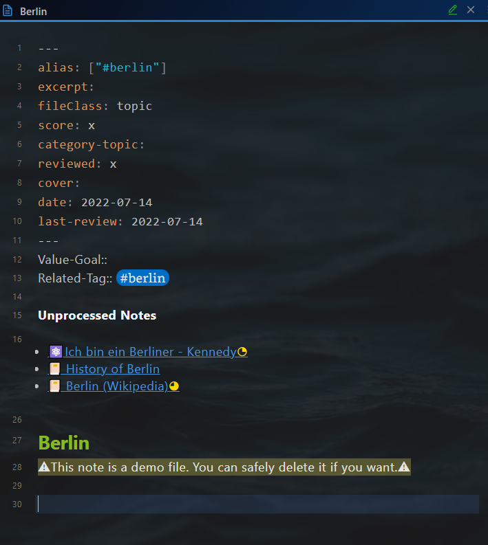
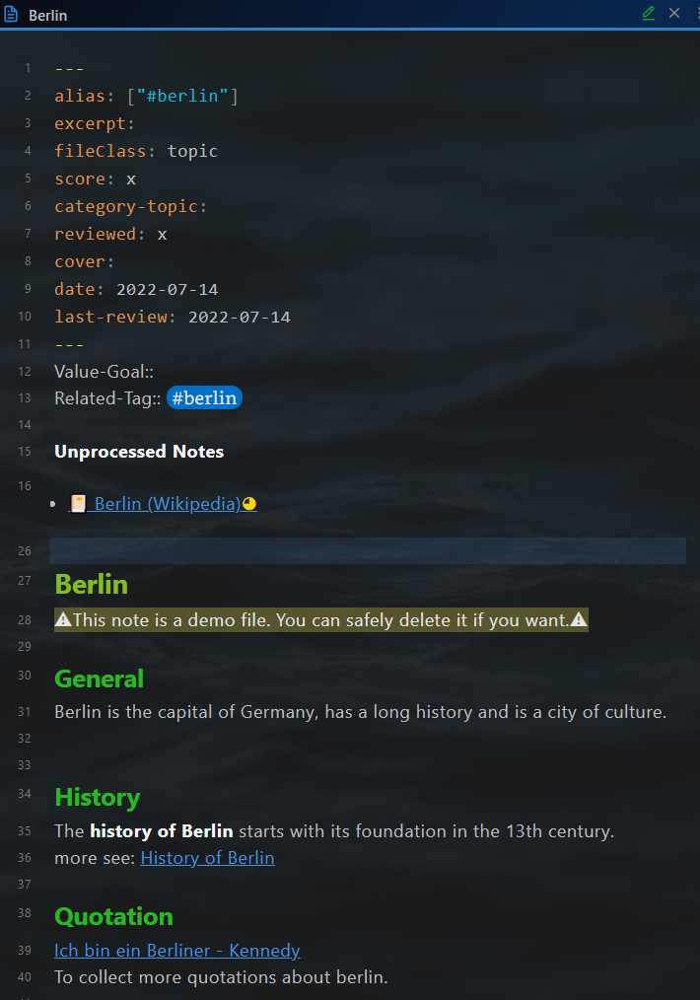

Topic
Note file structure
A topic note consists of 4 parts:
- Yalm front matter
- "Consolidation helper" section
- Note title
- Body text
Yalm front matter
The topic note has the following standard property in the yalm front matter.
---
alias: ["#berlin"]
excerpt:
fileClass: topic
score: x
category-topic:
reviewed: x
cover:
date: 2022-07-14
last-review: 2022-07-14
---
alias: Alias of the note, optional
excerpt: Excerpt of the note, optional
fileClass: Note type, always topic
score: The score of the note, possible value: x,...,xxxxx, required for the feature Spaced repetition
category-topic: Category of the topic note, optional
reviewed: Review times, possible value: x,...,xxxxx, required for the feature Spaced repetition
date: Creation date of the note, automatically created
last-review: Date of the last review, required for the feature Spaced repetition
"Consolidation helper" section
After the yalm front matter, there is a section for "Consolidation helper".
Value-Goal::
Related-Tag:: #berlin
**Unprocessed Notes**
~~~dataviewjs
let currentPage = this.current()
let tagRel = currentPage["Related-Tag"]
let notes = dv.pages(tagRel
+ ' and !"' + this.current().file.path + '"' )
.where(p => !p.file.inlinks.includes(currentPage.file.link) & p.file.etags.includes(tagRel));
if (tagRel != "#dummytopic") {
dv.list(notes.file.link);
}
~~~
It has three parts.
Part 1: Value-Goal::, For which value serves this topic, purpose of studying this topic
Part 2: Tags::, for defining the context to be consolidated in this topic
Part 3: dataview code block to support the consolidation.
All notes with the related tag are listed below Unprocessed. The notes will disappear, as soon as they are referenced within the topic (using a wiki link).
Before consolidation: Three notes are unprocessed. 
After consolidation: One note remains unprocessed. 
Note title
The note title and the note file name are kept in sync with the plugin Filename heading sync.
Body text
Use the wiki link to reference the related notes.